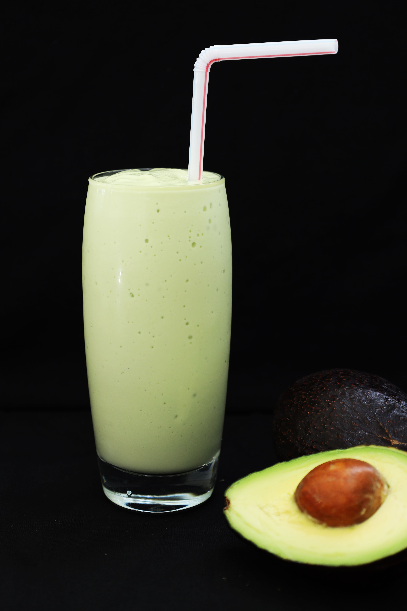

5 Kategori Gizi
Pastikan makananmu lengkap: Pokok, Lauk, Sayur, Buah, dan Minuman.
Atur asupan gizi harian dengan mudah. Pilih menu, hitung kalori & harga, dan pastikan makananmu seimbang!
Mulai SekarangPastikan makananmu lengkap: Pokok, Lauk, Sayur, Buah, dan Minuman.
Total kalori dan harga dihitung otomatis saat kamu memilih menu.



"Menu Planner bantu aku ngatur makanan harian. Sekarang dietku lebih teratur!"
— Hulu,nahasiswa
"Sangat membantu untuk meal prep mingguan. Harga & kalori langsung kelihatan."
— iqbal, Karyawan